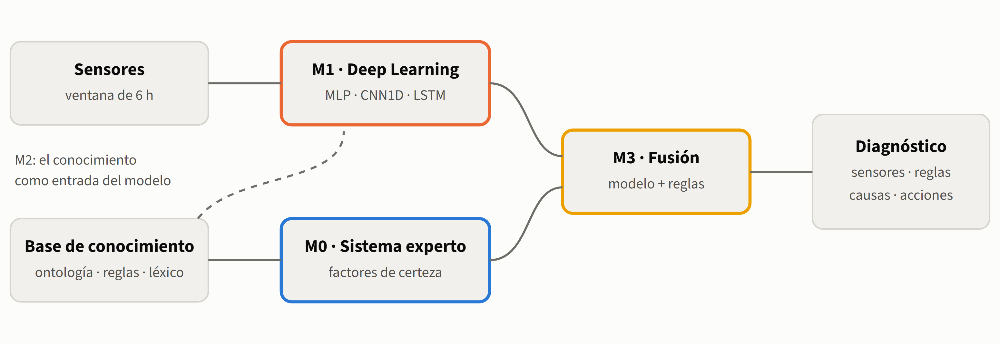
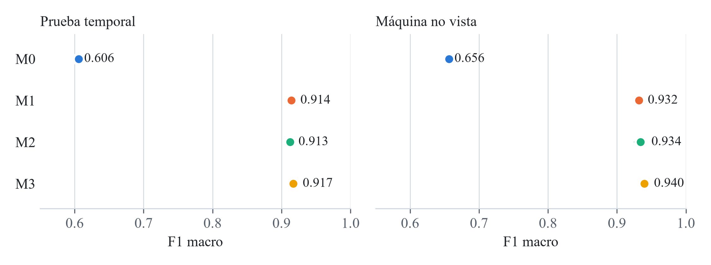
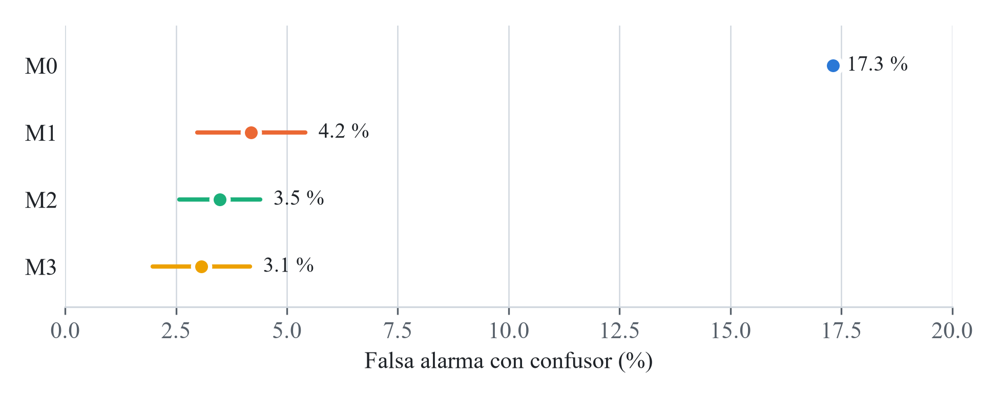

El reto
En la planta ficticia Metal Tech, los sensores se consultan aislados y los técnicos diagnostican con los sentidos: “el motor está cantando”, “la bomba está golpeando”. Ese criterio cambia entre turnos y personas, y lleva a falsas alarmas e intervenciones tardías.
El sistema debe predecir la falla y mostrar qué variables y qué reglas la sustentan.
Lo consultado
Sin entrevistas: un agente investigador revisó normas (por fuentes públicas), literatura, guías de fabricantes y datasets, y documentó cada decisión.
ISO 17359 · ISO 13374 · ISO 20816 · IEC 60034 · ANSI/HI 9.6.1 · AI4I 2020 · SKAB
Base de conocimiento
FMEA, léxico de técnicos, reglas con factores de certeza (MYCIN) y una ontología OWL validada con HermiT.
R13 SI margen de NPSH bajo Y vibración de alta frecuencia alta Y caudal inestable ENTONCES cavitación (FC 0.85)“La bomba está golpeando” → golpeteo percibido → cavitación, obstrucción de succión o rodamiento.
Datos y método
- Datos sintéticos: 32 máquinas, 36 meses cada 10 min, 1075 fallas, confusores y técnicos ficticios.
- MLP, CNN1D y LSTM por tipo de activo; ventanas de 6 h, horizonte de 24 h.
- Partición temporal + una máquina por tipo nunca vista; 5 semillas.
- ABP/ABPr, CommonKADS y CRISP-DM.
Arquitectura

Resultados

F1 macro, media de 5 semillas con intervalo del 95 %.

Falsa alarma ante condiciones confusoras, máquina no vista.
Prototipo
- API FastAPI: predecir, diagnosticar, simular y consultar la ontología.
- Web demostrativa de 8 páginas: simulador en vivo, explicación, grafo de la ontología, comparación, equidad y bitácora.
- 623 pruebas automáticas y revisión con Playwright.
Una alerta explicada
Variables: gradientes integrados. Reglas: traza del motor con valores reales.
Explicabilidad
| Medida | Valor | Azar |
|---|---|---|
| Top-3 sensores en la firma real | 74.6 % | 33.0 % |
| Caída al anular el top-3 | 98.3 % | 30.0 % |
Panel exploratorio de 5 agentes (no son personas): la explicación híbrida fue preferida en 60 de 60 pares.
Equidad y ética
- Una observación incorrecta del técnico duplica la falsa alarma de M0 (1.05 % → 2.08 %); en M3 casi no cambia.
- El sistema recomienda; una persona decide.
- Las observaciones nunca se usan para evaluar técnicos (Ley 1581 de 2012).
- Límites: datos sintéticos, reglas sin validar por técnicos, panel de agentes.
Conclusiones
- La fusión (M3) fue la mejor integración: mejor F1 y menos falsas alarmas.
- El conocimiento aporta explicación y prudencia más que detección; como veto, rechaza alertas correctas.
- Siguiente paso: validar reglas y explicaciones con técnicos y datos reales.